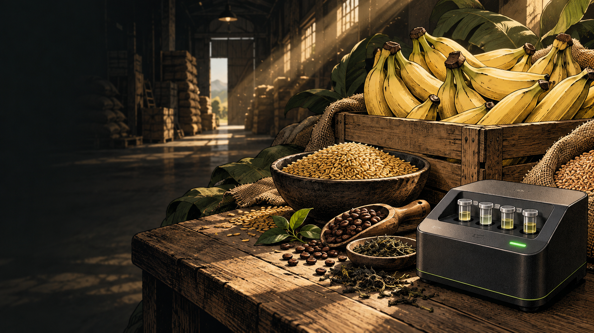
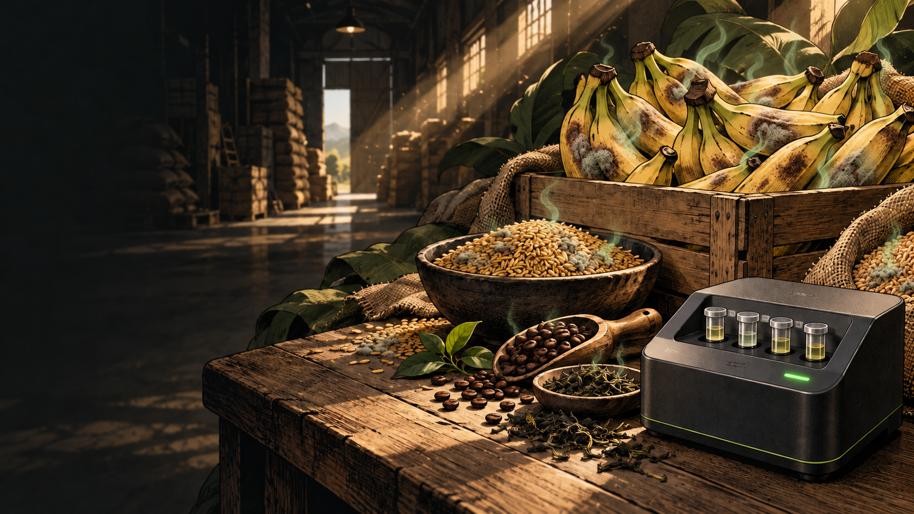
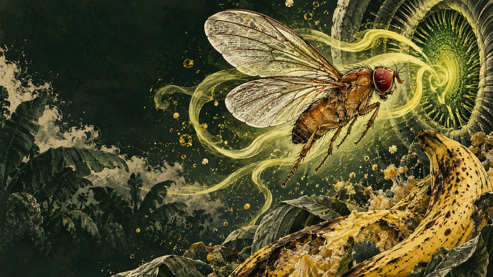
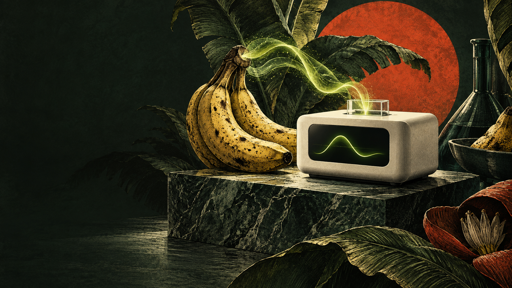

01 / AEROSENSE
Meet AeroSense.
A fruit-fly-inspired way to turn odor patterns into a screening signal.
Look beyond the surface.
Activate the scent lens to explore the same scene through an illustrated odor layer.

01 / AEROSENSE
A fruit-fly-inspired way to turn odor patterns into a screening signal.
Activate the scent lens to explore the same scene through an illustrated odor layer.
01 / THE UNSEEN STORY
A fruit-fly-inspired way to turn odor patterns into a screening signal.
Through the scent lens. Activate the scent lens to explore the same scene through an illustrated odor layer.
02 / THE UNSEEN STORY
Grain, bananas, coffee and tea carry months of care into storage.
Through the scent lens. Spoilage-associated volatiles can change while a shipment still looks ordinary.
03 / THE UNSEEN STORY

A familiar surface can hide a changing biological story.
Through the scent lens. Could an odor pattern identify a batch that deserves closer testing?
04 / THE UNSEEN STORY

Fruit-fly olfactory receptors give engineered cells a way to recognize volatile molecules.
Through the scent lens. An OR–Orco channel couples odor recognition to calcium entry; GCaMP6f reports the response.
05 / THE UNSEEN STORY

Calcium-responsive fluorescence connects living recognition to optical readout and decoding.
Through the scent lens. The reader and decoder connect receptor responses to an interpretable screening pattern.
06 / THE UNSEEN STORY
A screening signal guides the next inspection and confirmatory test.
Through the scent lens. Mold-associated odor is not an aflatoxin measurement. Confirmation remains part of the workflow.
NTHU iGEM 2026 · Food & Nutrition
Can we notice food-risk signals before they become visible?

Biological recognition → optical readout → neuromorphic decoding → screening decision.
Living receptors→Fluorescent response→Optical reader→Odor pattern
Explore the project →Read the evidence
One evidence trail connects biological sensing, optical engineering and computational interpretation.
Follow the response measurements, assay controls and biological interpretation.
Explore results ↗ 02 / MEASUREMENTWhat can the reader resolve?Inspect the optical design, airflow simulations, electronics and signal-processing calculations.
Explore hardware ↗ 03 / INTERPRETATIONWhat can a pattern mean?Explore the fly-inspired decoder, data provenance and quantitative evaluation.
Explore model ↗How testing changed our decisions → · Who shaped the intended use →
Watch
A short film on the problem AeroSense is built to notice — before spoilage is visible.
Experience AeroSense
 EXPLORE IN 3D
Take the fly’s-eye view.Warehouse air → Living sensor → Reader
EXPLORE IN 3D
Take the fly’s-eye view.Warehouse air → Living sensor → ReaderFollow the signal
Walk an odor from warehouse air through a living sensor, the reader, and the decoder.
Follow the signal →A SCENT BECOMES A PATTERN
Banana selected. Switch the odor to change the pattern.
Illustrative code · not measured sensor data.
Play Odor Pixel
Recognize, mix, and decode smell as a pattern — not a single note.
Play Odor Pixel → (opens in a new tab)Enter the Learning Lab
A quieter path through the same chain, written for learners who want to stay with each step.
Enter the Learning Lab →
Meet the team
Students across synthetic biology, neuroscience, electronics, modeling, design, and human practices are building one system around a deceptively simple question: can biology help us notice food-quality change earlier?
Meet the team →From the team album